16 августа 1898 года Эдвин Прескотт, дизайнер американских горок из Массачусетса, получил патент на усовершенствование американских горок, которые любители кататься стали принимать как должное – речь идёт о вертикальной петле. И хотя американские горки, изображённые на иллюстрации патента, а позже реализованные как аттракцион Loop the Loop на Кони-Айленде, не были первыми в своём роде, они привело к созданию более безопасной, более удобной и теперь преобладающей эллиптической форме петли.
Ста́туя Свобо́ды[1] (англ. Statue of Liberty, полное название — «Свобо́да, озаря́ющая мир», англ. Liberty Enlightening the World) — колоссальная скульптура в стиле Наполеона III, или стиле Второй империи, расположенная в США на острове Свободы, находящемся в Верхней Нью-Йоркской бухте примерно в 3 километрах к юго-западу от южной оконечности острова Манхэттен. Была сооружена как подарок США от Франции ко Всемирной выставке 1876 года и столетию американской независимости (на выставке был показан только факел статуи). Завершённую статую США получили только в 1886 году. Является национальным памятником США. С 1984 года входит в список Всемирного наследия ЮНЕСКО.
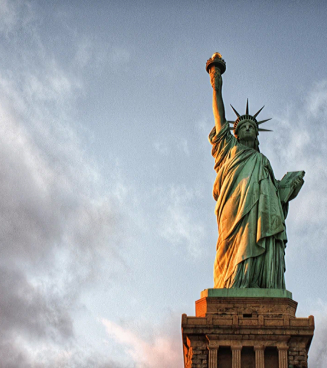 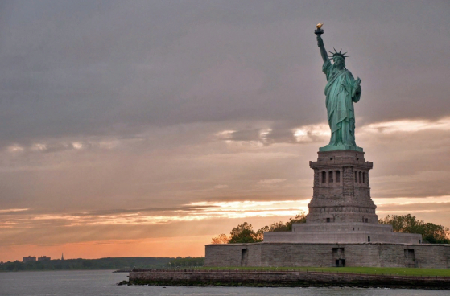 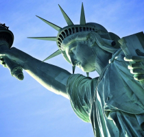 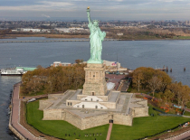 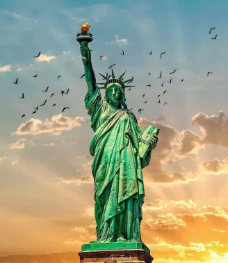 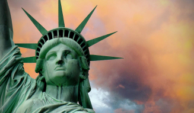 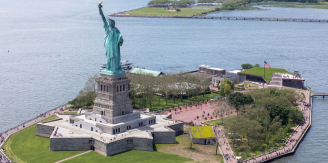 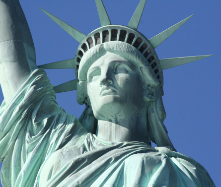Типичной американской едой считаются ребрышки барбекю, бифштексы, гамбургеры, арахисовое масло, картошка фри, различные десерты - тыквенный и яблочный пирог, маффины (небольшие кексы), чизкейк (творожный пирог).
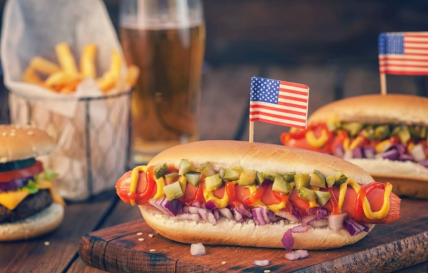 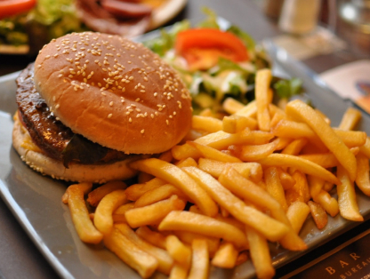 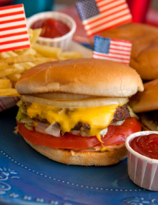 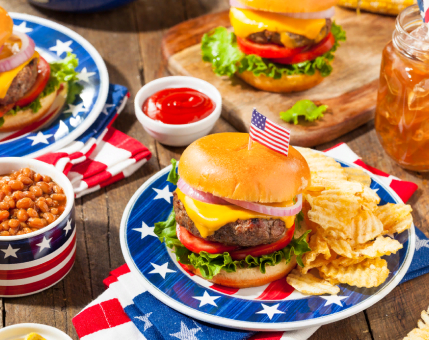 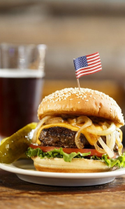 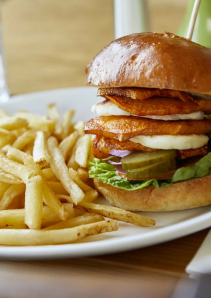